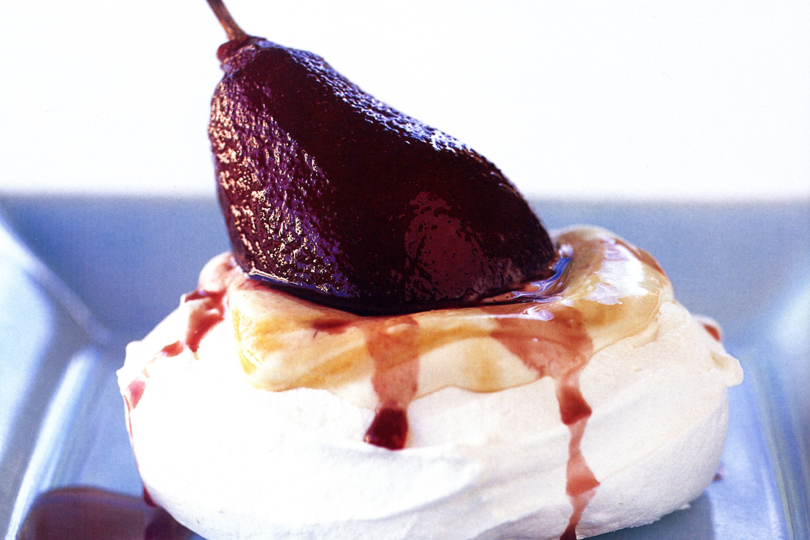

Poached pear vacherin (meringue)

Description:
Chef Scott Pickett whips together a sweet and creamy dessert with flavours from Victoria's Mornington Peninsula.
Ingredients:
- 7 egg whites
- 2 tsp white vinegar
- 350g caster sugar
- 1 tbs cornflour, sifted
- 500g caster sugar
- 2 cardamom pods
- 1 cinnamon quill
- 4 Packham pears, peeled and halved
- 300ml creme fraiche
- 100g icing sugar, sifted
- 1/2 tsp vanilla extract
Steps:
- Preheat oven to 150°C. Line 2 baking trays with baking paper.
- To make the meringue, place egg whites and vinegar in the bowl of a stand mixer fitted with the whisk attachment and whisk on medium speed. Once egg whites are foaming and you can’t see any liquid whites, gradually add the sugar, whisking constantly. Once all sugar has been added, continue whisking for 8 minutes or until mixture is shiny and the sugar has dissolved. Using a spatula, fold in cornflour, ensuring there are no lumps.
- Using a large spoon, gently place 6 even scoops of meringue onto the prepared trays, keeping the mixture high (they will collapse once cooked). Place trays in the oven and reduce temperature to 120°C. Bake, swapping trays halfway, for 1 hour-1 hour 15 minutes until crisp.
- Turn off oven and allow meringues to cool in the oven for 1 hour with the oven door ajar.
- or the poached pear, place sugar, spices and 4 cups (1L) water in a large saucepan and whisk well to dissolve the sugar. Place pears in the poaching liquid and bring to a simmer over medium heat. Cover with a disc of baking paper. Once simmering, reduce heat and gently simmer for a further 15 minutes or until pears are tender.
- Remove pears from liquid and set aside to cool, then slice. Return poaching liquid to medium-high heat and simmer for 20 minutes, or until reduced and syrupy. Set aside to cool.
- For the vanilla chantilly creme fraiche, whisk all ingredients in a stand mixer on high speed until stiff peaks form.
- Place meringues on plates, spoon over the vanilla chantilly creme fraiche and top with poached pears. Drizzle with reduced syrup to serve.
- Enjoy!